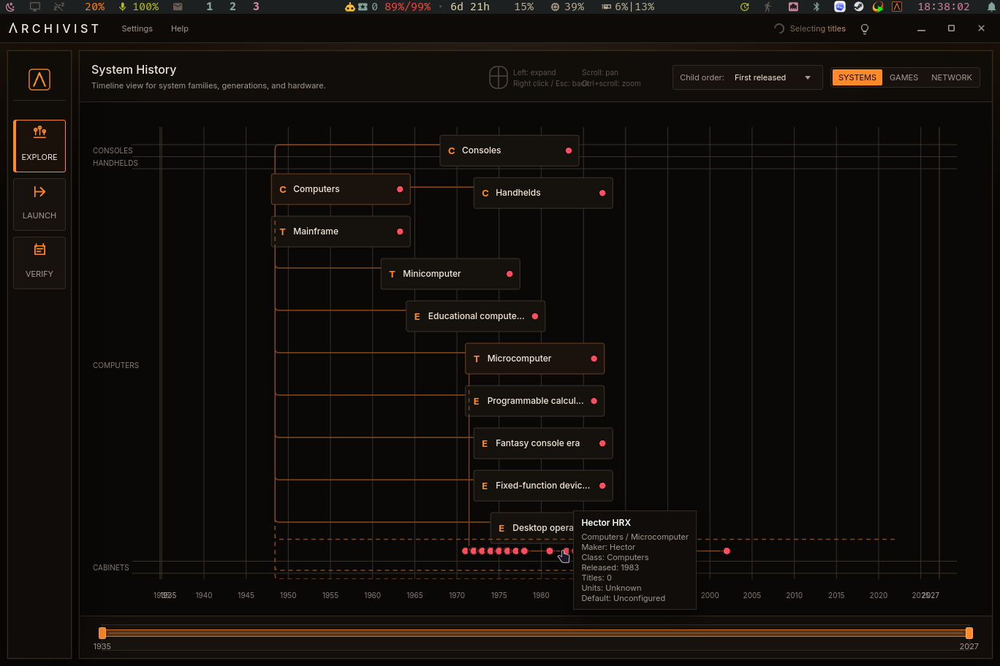
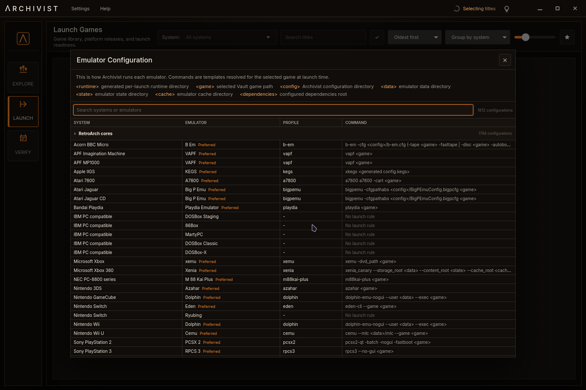
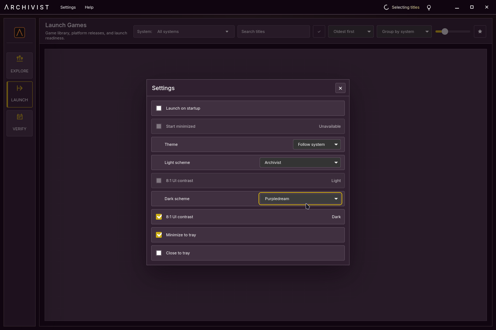

Frontend + 1G1R curator + ROM manager
Video game history,
made playable.
Archivist turns a ROM archive into a curated history of the medium. It selects releases, preserves their context, and gives you one place to explore and play them using the ROMs and emulators already on your system.
- 1,812launch configurations
- Retool1G1R selection rules
- Historiancached Vault index




01 / 04
System history
Browse system families and releases on an interactive timeline.